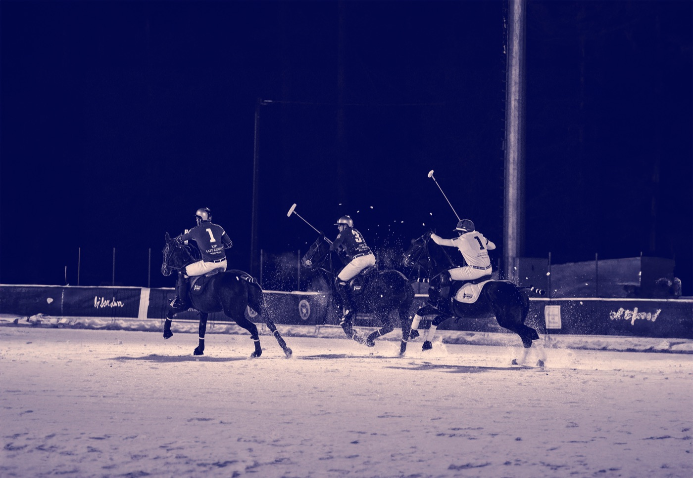
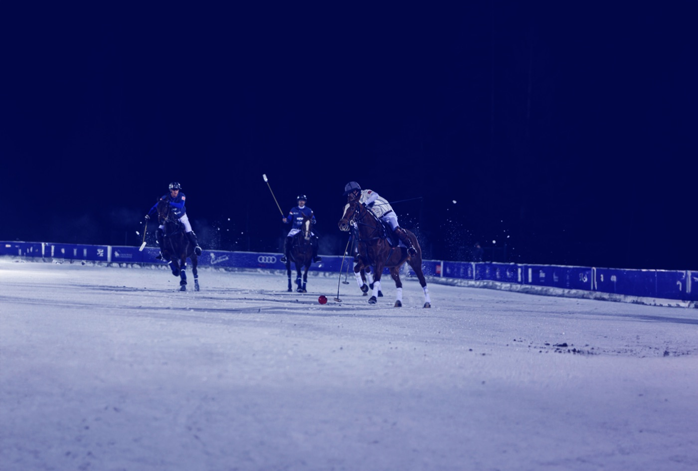
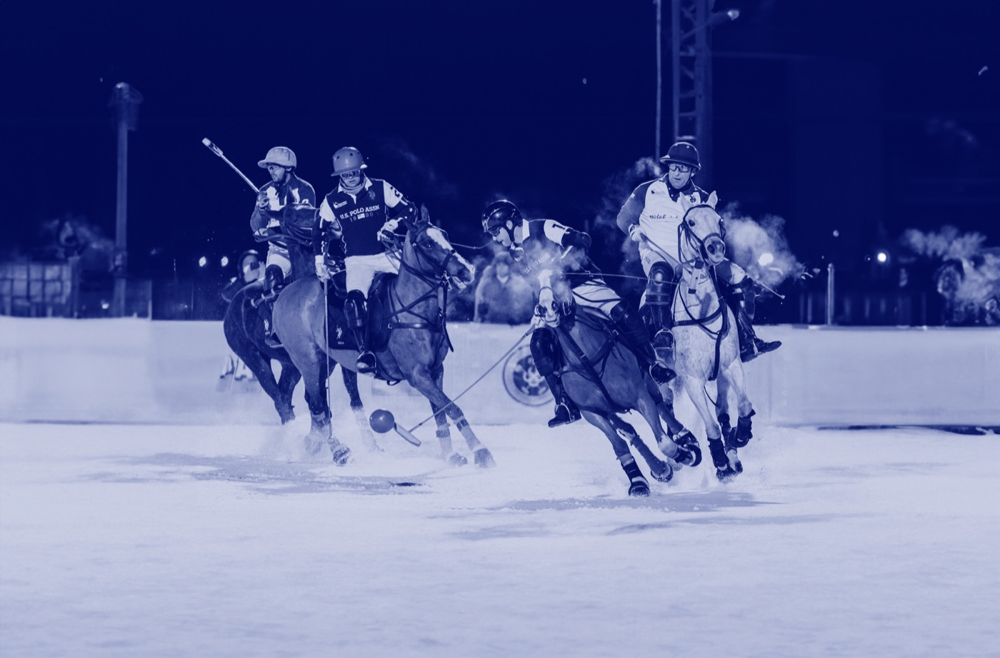
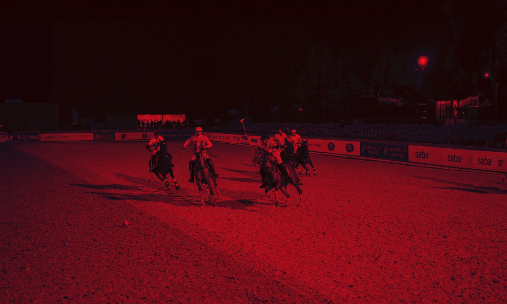
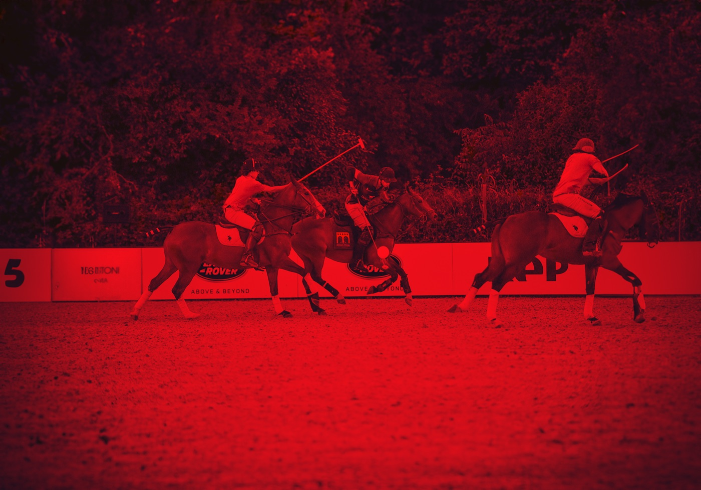
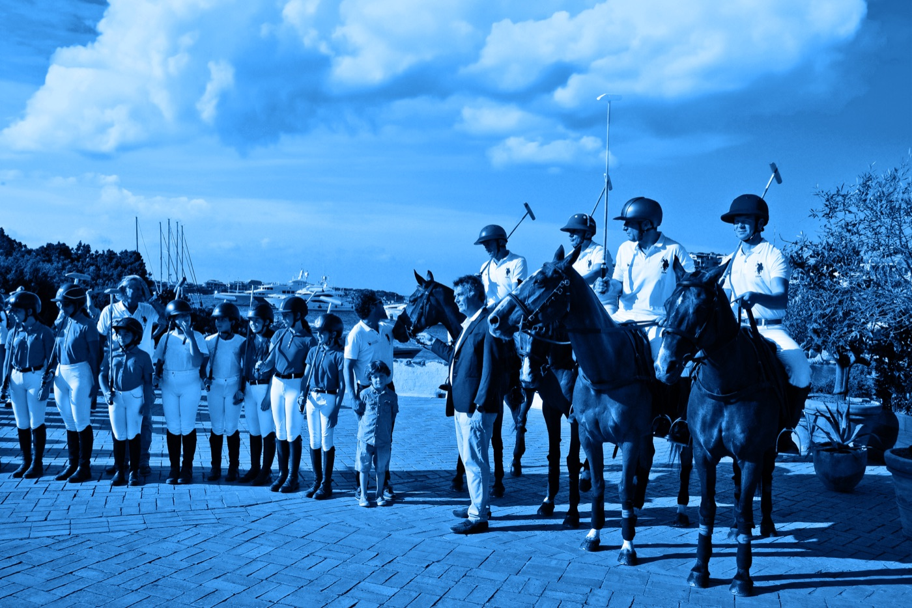

Dalla neve del Monte Bianco al mare di Portocervo, passando per il cuore di Roma: ogni tappa di Italia Polo Challenge ha una location, un'identità e una storia diverse — la stessa qualità sportiva.

Il torneo inaugura la nuova stagione del circuito ai piedi del Monte Bianco. Snow polo in notturna, sul campo innevato: sport, quota e spettacolo, in una delle cornici alpine più scenografiche d'Europa.

Nella splendida cornice ampezzana è nato lo snow polo del circuito: un test match nel 2020, ripetuto nonostante la pandemia, diventato un vero torneo con squadre da tutto il mondo. Si gioca in notturna sul campo innevato di Fiames, messo a disposizione dal Comune di Cortina.

Palcoscenico naturale da quasi 90 anni dell'equitazione internazionale, Piazza di Siena ospita l'arena polo sul campo in sabbia del Galoppatoio di Villa Borghese. La tradizionale sfilata di giocatori e cavalli attraversa la storica Via dei Condotti, nel cuore della Capitale.

Il grande polo arriva in Sardegna, sul campo Andrea Corda di Abbiadori a due passi da Portocervo. Le sfilate nel centro storico di Arzachena e nella Piazzetta, insieme al Polo Party, costituiscono le attrazioni clou di un'edizione estiva tra sport e glamour.






Contattaci per informazioni su biglietti, hospitality e partnership.
Contattaci